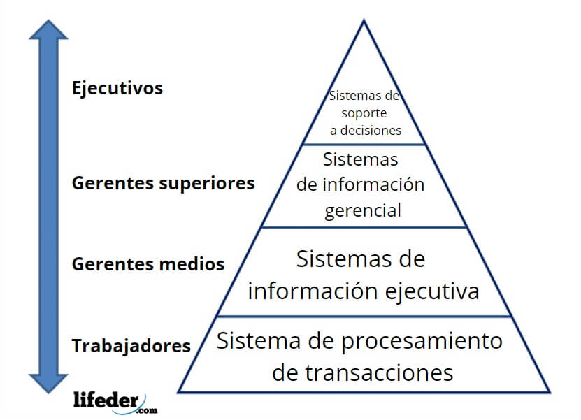

TIPOS DE SISTEMA DE INFORMACION.
los tipos de información se refieren a las diferentes categorías en las que se puede clasificar la información en función de sus características y propiedades.Como mencioné anteriormente, los principales tipos de información son(formalidad, automatizacion, integracion, cobertura, areas funcionles o funciones organizacionales y niveles de decisiones o niveles administrativos
los SI pueden según el grado de automatización pueden ser manuales, los cuales, utilizan la tecnología de papel y lápiz o automatizados, los cuales son apoyados por tecnologías de información para ingresar, almacenar y procesar datos ydistribuir, compartir y comunicar la información, los SI automatizados a su vez son denominados SI computarizados o CBIS(Sistema de información basados en computadora) y pueden ser total, mediana o parcialmente automatizados.De acuerdo con su nivel de formalización en la organización Laudon clasifica los SI en formales e informales.
formales e informales.
Los sistemas de información formales:son estructuras organizativas diseñadas para recopilar, procesar, almacenar y distribuir información de manera sistemática dentrode una empresa u organización. Estos sistemas suelen estar compuestos por hardware, software, procedimientos, bases de datos y personal especializado que trabajan juntos para gestionar y facilitar el flujo de información dentro de la organización
Los sistemas de información informales son aquellos que surgen de manera no estructurada dentro de una organización. Estos sistemas no están diseñados ni planificados, sino que evolucionan de forma natural a medida que las personas interactúan y comparten información en el entorno laboral. Los sistemas informales pueden incluir comunicaciones verbales, redes sociales internas, intercambio de información no oficial y otros canales no oficiales de transmisión de datos.

creada por Elizeth Dravo Diaz